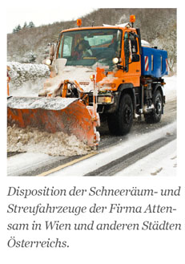

Attensam führt mit 1.600 MA den Schneeräum- und Streudienst auf den Straßen von Wien und weiteren Städten in Österreich durch. Alle Streu- und Schneeräummaschinen wurden von Vitral Tracking (Öst.) mit ecoGPS-Systemen ausgerüstet. Hierdurch konnte zum einen die Einsatzplanung perfektioniert werden, zum anderen kann über das ecoGPS-System lückenlos nachgewiesen werden, welche Fahrzeuge zu welchem Zeitpunkt an welchem Ort tätig waren. Das ist insbesondere für Haftungsfragen relevant. ecoGPS meldet dabei nicht nur die Position, sondern auch die jeweilige Tätigkeit.
Wird die geplante Tour nicht wie vorgesehen durchgeführt, erhalten die Mitarbeiter der Attensam Disposition automatisch eine Benachrichtigung vom IGL-Server in Aachen.
Das Projekt wurde zusammen mit der Firma Vitral Tracking realisiert.
